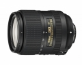

器材库 > APS画幅镜头 > AF-S DX 18-300/3.5-6.3G ED VR

详细规格
发布日期
2014-04-17
焦距
18mm-300mm
等效35mm画幅焦距
27mm-450mm
最大光圈
f/3.5-6.3
最小光圈
f/22-40
视角（对角）
76° - 5°20‘
镜头结构
16片/12组
非球面镜片
3片
低/超低色散镜片
3片
光圈叶片
7片
最近对焦距离
48cm
最大放大倍率
约0.3125倍
驱动马达
SWM（宁静波动马达）
滤镜口径
67mm
镜头卡口
Nikon AF
防抖
是
颜色
黑色
尺寸
78.5×99mm
重量
550g
附件
67mm镜头前盖LC-67，镜头后盖
备注
内部对焦
匿名网友2017-12-29 20:103.25 分
操作性 3.00耐用性 5.00性价比 3.00解像力 0.50色彩还原 4.00机械结构 4.00
肥肥羊2015-07-18 20:304.83 分
操作性 5.00耐用性 5.00性价比 5.00解像力 4.50色彩还原 4.50机械结构 5.00
产品图 / 样片
AF-S DX 18-300/3.5-6.3G ED VR